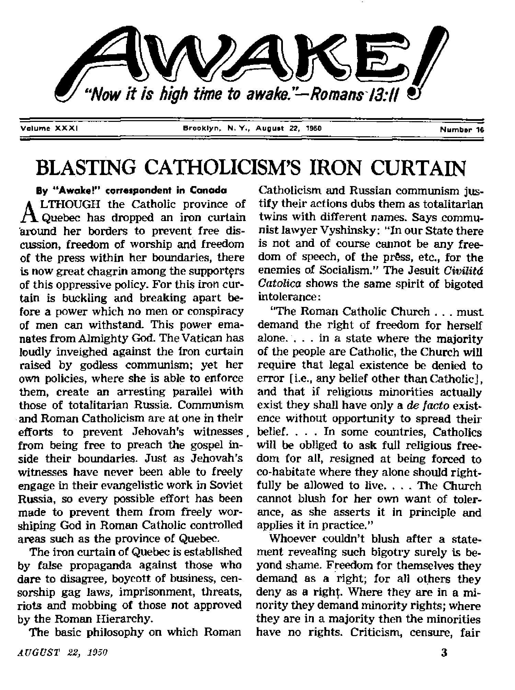
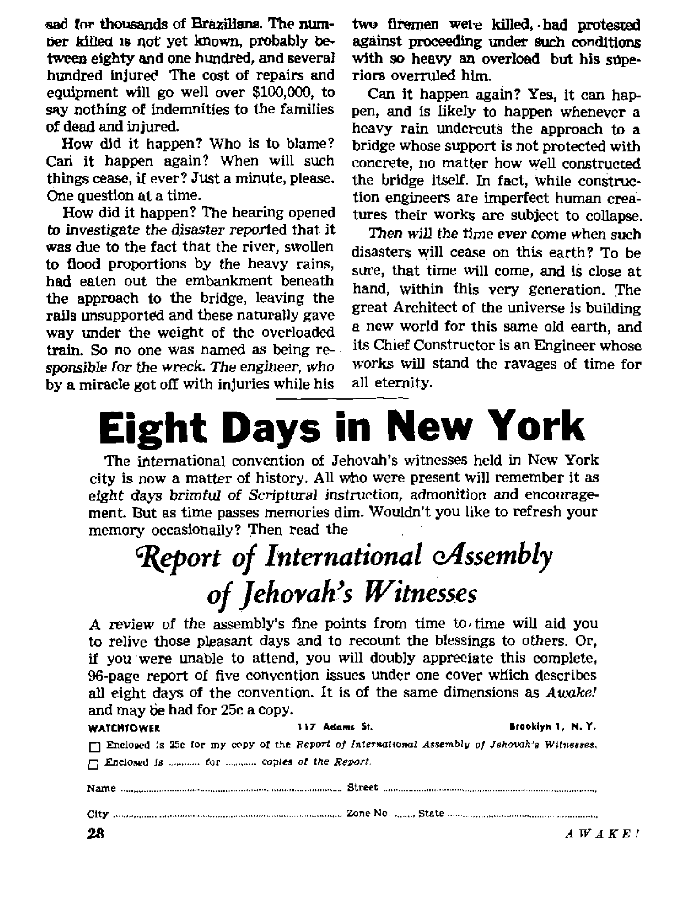

THE MISSION OF THIS JOURNAL
News sources that are able to keep you awake to the vital Issues _f our times must be unfettered by censorship and selfish interests. “AwakeI** has no fetters. It recognizes facts, faces facts, is free to publish facts. It is not bound by political ambitions or obligations; it is unhampered by advertisers whose toes must not be trodden on; it is unprejudiced by traditional creeds. This journal keeps itself free that it may speak freely to you. But it does not abuse its freedom. It maintains integrity to truth.
"Awake f' uses the regular news channels, but is not dependent on them. Its own correspondents are on all continents, in scores of nations. From the four1 corners of the earth their uncensored, on *the- scenes reports come to you through these columns. This journal's viewpoint is not narrow, but is international. It is read in many nations, in many languages, by persons of ail ages. Through its pages many fields of knowledge pass in review—government, commerce, religion, history, geography, science, social conditions, natural wonders—why, its cover* age is as broad as the earth and as high as the heavens.
“Awake !*' pledges itself to righteous principles, to exposing hidden foes and subtle dangers, to championing freedom for all, to comforting mourners and strengthening those disheartened by the failures of a delinquent world, reflecting sure hope for the establishment of a righteous New ^Vorld.
Get acquainted with “ Awake!” Keep awake by reading " A wake!”
rVPt-ISHED HEXJJMONTHky BY WATCHTOWER BIBLE AND TRACT SOCIETY INC.
117 Adam* Street Brooklyn 1, N. Y., U. 6. A.
N. H. Knoru, Prudent Grant Suites, Secretary
Printing this issue: 910,000 Five cents a copy
In vhleh this Mifirlni b nbllihid: gfniJnlQiithly—Etrglbb, German, ^pmhh. Monthly—AtriJiaiitf, [rmJsh, French, Gmi, Fortmjuwc, Swedish, Ukrainian.
Ciflue Year!? Subscription Bate
America, U.S., 1) T Adams St., Brooklyn 1, N.Y. Australia, 11 korwford Rd., SLrkrWJd, N.B.W. 6* Cknidt, 40 Irwin Are. Toronto 5, Ontario $1
31 Critrn Tmato. InmIod. H'. £ 5a teeth AfricA. 623 BoiWn House Cep« Town 3a Entered as second-clias matter at Brooklyn, N.
Rkj)ltUi)ttt sbuu)d be sent io rfflre ju your country in fora&tiancc with tefulatkna to guarantee Mfe delivery at 'in«ney. Remit cancel are accepted at Brooklyn from conn trios whe'c no ofllcie is located, by international itioney order only, Subscription rates in ditferent countries are here stated In local currency. Nrtits of exitiralltn f with renewal blank) Id sent at irut two i&iues before subscriptiorj expires. Cbanli ol iddres* when sent to our offln may be rtirfCEAd eTectlri- within out aumih. Hess your old as. well as new addies*.
., Art of March 3. 13T9. PrUred in U. S.A.
C O N T
Blasting Catholicism’s Iron Curtain
Dominican Republic Tramples
Communists Outlaw Jehovah’s Witnesses 12
Demons Turn Parents on Children
ENTS
Some History and Facts on Wine*Making 2
European Vines, American Roots
“Your Word Is Truth”
The Campista Night Express at Tangufi I Watching the World
comment, or even a plain statement of the facts, they cannot stand and will not tolerate. It is as the great Expounder of true freedom said:
“And this is the judgment: Because the light is come into the world and men loved darkness rather than the light. For their works were evil. For every one that doth evil hateth the light and cometh not to the light, that his works may not be reproved- But he that doth truth cometh to the light, that his works may be made manifest: because they are done in God ” —John 3:19-21, Douay.
Neither Roman Catholicism nor communism has learned the salutary rule for freedom of worship announced in the Scriptures by the great judge Gamaliel: “Refrain from these men, and let them alone: for if this counsel or this work be of men, it will come to nought: but if it be of God, ye cannot overthrow it; lest haply ye be found even to fight against God/* —Acts 5:38, 39.
Authorities of the province of Quebec have done everything within their power to deny Jehovah’s witnesses freedom of worship, and have even tried to drive them out of the province. It was reported in the Montreal Star, December 4, 1946: “War without mercy on the Witnesses of Jehovah was the content of an order to Provincial Police by Premier Maurice Duplessis. . . . He said he intended to employ most rigorous methods against those who, under the name of Witnesses of Jehovah, were spreading propaganda.” In a vicious attempt to smear and misrepresent he fulminated: “Communists, Nazis and those persons who are propagandists for the insidious campaign of the Witnesses of Jehovah will be treated as they deserve to be treated, because under the Union Nationale government there is and there will be no compromise with such persons.”
In commenting on these misrepresentations the Glace Bay Gazette remarked: "Now even a man who has the most elementary understanding of politics will immediately acknowledge that there is not the slightest relationship between Communism, Jehovah’s witnesses and German Nazism. Why should Duplessis, where a question of differences in religious beliefs was involved, raise an issue and link together Communism,, the Witnesses and Nazism? Mr. Duplessis very deliberately selected this occasion to focus violent antipathy to the religious ^roup through the Communists. Nazism is a shadow issue in Canada today, unless we may consider the Quebec premier's actions as a reflection of its technique. . . . His inconsistency on these issues is notorious, for his voice was silent when Adrien Arcand and Camillien Houde, with fascist utterances, rode roughshod over the laws of Quebec and of Canada, the laws that he hypocritically defends at this time.”
At the instigation of the attorney general’s department hundreds of charges' against Jehovah’s witnesses were laid under provincial statutes and even some new statutes passed with the avowed object of stopping their gospel-preaching. “Their circulars are seditious,” roared Duplessis. This charge was nothing new to Jehovah’s witnesses. The great Book of Freedom records that faithful servants of God have been meeting this false charge for more than two thousand years. (See Ezra 4:15, 19; Acts 24:5.) Modern-day Jehovah's witnesses count it an honor to stand in company with many other faithful fighters for freedom of worship in times past who have beeh charged with the same offense; for example, Zerubbabel, Nehemiah, the apostle Paul, and Christ Jesus the Messiah, to mention a few.
One of these sedition cases, involving Minister Aime Boucher, eventually reached the Supreme Court of Canada, where the campaign of persecution and misrepresentation against Jehovah’s witnesses received a severe setback, (See Awake! April 8, 1950.) The Supreme Court reversed the conviction, and Mr, Justice Rand roundly denounced the failure of justice behind Roman Catholicism’s iron curtain in the province of Quebec. He said: “For this exercis£ of what has been taken for granted to be the unchallengeable rights of Canadians, [Jehovah’s witnesses] have been assaulted and beaten and their Bibles and publications tom up and destroyed, by individuals and by mobs; * . . whatever they did was done peaceably, and, as they saw it, in the way of bringing the light and peace of the Christian religion to the souls of men and women. That is to say that their acts were lawful.”
With Quebec declared “open” for freedom of speech, press and worship, Jehovah’s witnesses were quick to inform the people both within and without Quebec that the iron curtain had been cracked open. This was done in a special issue of Awake! which told of the Supreme Court decision, the Joliette kidnaping, and contained two other articles dealing with particular claims of the Roman Catholic Church. A special distribution campaign was organized, and Jehovah's witnesses, nearly 19,000 strong, swarmed across Canada with the news. All were voluntary workers giving their time without remuneration to make known the truth.
The question was alive and the people were interested. Many were incensed at the assaults on civil liberties which had taken place. The first printing of the magazine was gone almost as quickly as it arrived and a second printing too disappeared like a prairie snowdrift before the warm spring chinook. Over 500,000 copies of the magazine, half of them in French, were distributed throughout Canada, including Quebec. This distribution was greater than that of the largest Canadian magazine.
Prominent citizens such as doctors, lawyers, judges, newspaper editors, legislators, etc., all were delivered copies of the special publication. On the street comers, from house to house, through stores and offices the distribution went.
In the province of Quebec approximately 1,200 full-time and part-time ministers took part in the distribution. By a mighty effort they distributed in the province more than 225,000 copies of Awake!\The holes in the iron curtain gape larger and larger. The facts and the light of truth went into the province to the delight of many people who are there. By day and by night the distribution went on. During the daytime the magazines were distributed in the cities like Montreal and Quebec. In the evenings, smaller towns and villages were visited. One hundred and fifty smaller municipalities were liberally saturated with the special issue. In the rural districts Jehovah’s witnesses sometimes traveled with horse and buggy over incredibly bad roads, sometimes driving thirty miles to reach many farms.
This distribution of Awake! was not done with the object of stirring up ill-feeling in Quebec, for Jehovah’s witnesses do not hate the people there. Their only object is to help them. If they don’t want to read the Literature made available, fc-r them, they are under no obligation to do so. Surely it is not wrong to let the people choose for themselves! For has not the Roman Catholic Church itself sent its missionaries into all countries, many of which have had their own religion? Some of such missionaries who have been persecuted or killed have even been canonized as saints.
Quebec lieaction
This monumental distribution of nonRoman Catholic literature, probably the greatest in the history of the province, caused a tremendous reaction among the people of Quebec. The facts revealed by Awte/ were discussed in the homes, in restaurants, on trains and busses, in the press, and adversely in the pulpits. Letters were written to the press and also to the Society's office. Some of these—invariably unsigned—were filthy and obscene, products of the low minds that spawned them. Some magazines returned weren't even fit to handle. But not all were like this. Many persons were surprisingly stirred and interested in the information received, and disgusted with the hypocritical law enforcement of the province. Requests for subscriptions to The Watchtower were received from very unlikely parts of Quebec, including Joliette itself.
One Quebec hotel owner was so disturbed at the disgraceful kidnaping of the two lady evangelists at Joliette that he invited them to come and take a free room at his hotel. A student at a Catholic college in Montreal wrote to ask for additional Bibles and Bible literature, which he wanted delivered to him anonymously in order that they would not be confiscated. He said: “I am a student at St. ------
College and I have read your pamphlet Awake! Frankly you have convinced me that your religion is good. I have seen these poor missionaries molested by vulgar men who wanted to violate them. Poor girls! God sees them and knows how to recompense them. So it is probable that I will become one of you, but please send me your Bible (which I have been told about) as well as your literature and everything about Jehovah's witnesses’ religion which will soon be mine.”
A lawyer in Quebec city was so disturbed about the level to which law enforcement had sunk that at his own expense he telephoned the Society’s Toronto office about it. He wanted to be allowed to appear in some of the cases of Jehovah’s witnesses free of charge. He felt that appearance of a Catholic lawyer in these cases would demonstrate to those responsible for this persecution that many Catholics were not in favor of it. “Why,” he said, “to oppose things like that would be a benefit to the French Canadian people as well as to Jehovah’s witnesses. I think it is shameful!”
One of the ministers of the Quebec city congregatiop of Jehovah's witnesses was called by telephone to visit a family interested in the work of Jehovah's witnesses. When he arrived at the home he found a young man acquaintance of theirs who had read a copy of Awake! He was so delighted that he immediately set out to get in touch with Jehovah’s witnesses. He was the ninth person who had read that particular copy of the magazine; it had been passed from hand to hand by other appreciative readers. This young man was glad to have a part in the campaign and distributed thirty-five copies himself.
In one Quebec town the chief of police had the members of the force go around the town and gather up the magazines after the distributors. When the witnesses were brought into his office he pleaded with them to stop. He said, “The priests and the lawyers have been after me to prosecute you but I’ve told them, I’ve been watching these cases in other towns and Jehovah always wins,”
When the witnesses went to Brompton-ville, north of Sherbrooke, Quebec, they heal'd the fire siren shriek out. Thinking this would call off any possible interference, they proceeded to distribute the magazines, only to find that this was not for a fire at all. It was a prearranged signal to announce to the police that Jehovah’s witnesses were in town. Regardless of this the magazines were placed and no arrests made.
Riat at Shawinigan Falls
Right in the middle of the campaign, on April 12/ 1950, a disgraceful riot took place at Shawinigan Falls, Quebec. A chapel owned by a small Protestant sect known as the Christian Brethren was wrecked by a large mob of French Roman Catholics. Chairs, furniture, Bibles, everything In the place was completely destroyed. Even a car parked outside was wrecked. Crazy mob rule held sway in the town for two hours, yet the police stood by and did not make a single arrest. A well-known columnist, J. V. McAree, summed up the matter:
“The State, not the church, is the final judge of what is permissible in the name of religion. In Quebec what is permissible seems to be determined by the church able to muster the largest mob at any given place and time. So we see the Christian Brethren abused by a Quebec gathering while the police stand by either helpless or approving. The mayor of Shawinigan Falls remarked of the disorders that he regretted them chiefly because they gave the town a bad name. Apparently it was not the outrages committed against a group of Christian people whose only offense seems to be that their religious views are different from those of the majority in Quebec. He apologized for the police saying that there were so many in the mob that the officers of the law were powerless. In other words the offenses committed were so grave and so general that they could neither be checked nor punished. .. . Canadian law has not stood aside apologetically while the Doukhobors demonstrated. . , . It was different in Quebec where the lawbreakers were members of a powerful majority. Quebec has a record of persistent persecution of religious sectaries.”
The local priest, Monsignor Trudel, said of the incident: “This is assuredly regrettable and contrary to the spirit of Christianity. We cannot but disapprove of recourse to such acts. For the good of peace^ the reputation of our province and the respect of our compatriots in foreign lands, we prescribe a pacific attitude. Let us be prudent in order not to play the game of the sect. Let us remain neutral.”
For such a disgraceful and outrageous riot this milk-and-water statement is supposed to signify disapproval. His real fear seems to be that because of the openings in the iron curtain, the world will get to know about it. After such barbarous actions on the part of his parishioners he thinks they should “remain neutral”. Actions speak louder than words. Why didn’t he recommend that the Roman Catholic thugs and hoodlums be prosecuted at law? The police were there and must have known many in the mob. This statement pretends to disapprove but carefully avoids any recommendation that would prevent its recurrence.
Mayor Roy of Shawinigan Falls said he believed the incident was provoked by a French-language pamphlet entitled Awake! which was distributed prior to the riot. It was “regrettable but unavoidable”. An effort was made to excuse these actions on the ground that it was a case of mistaken identity—the people were to be excused— they really hadn’t intended to harm the Christian Brethren, they had mistaken them for Jehovah’s witnesses' That, of course, made everything all right.
This explanation may have sounded quite logical to the warped mind of a man sworn to uphold the law, but who is only sorry about the incident because it brought bad publicity. However, it surely exploded a torch of indignation throughout Canada.
Speaking of Jehovah’s witnesses the Ottawa Citizen said, April 18:
“Persecution gives color to its denunciations of Quebec’s ‘burning hate'. Encouraged by publicity, the sect redoubles Its zeal Roman Catholicism begins to acquire an undignified resemblance to an elephant frightened by a mouse,
"The fundamental issue, however, is religious freedom. Small sects have just as much right as great churches to make converts if they can. Roman Catholics and Protestants, whose organizations began as persecuted sects, are quick to protest religious persecution in other lands. They should be alert to champion tolerance in Canada.
. The sectarians are within their rights to preach and publish their beliefs. Those who dislike them have the alternative of discussion or silence. The preservation of personal freedom in an orderly society requires the concern of all Canadians, Protestant or Roman Catholic, English-speaking or French-speaking, It is the responsibility of Quebec’s leaders in government, religion and education to insist on respect for the laws and protection for civil liberties.’*
The Peterborough Examiner remarked, April 19: "At a time when the sending of a Canadian ambassador to the Vatican |s under serious discussion it is unfortunate that there should be so many acts of persecution of religious minorities in Quebec. Inevitably the impression is created that if Catholic influence in Canada were to spread, such intolerance would spread with it. . , . Hundreds of thousands of Canadians will feel that unless this sort of persecution is put down with a strong hand, it has the tacit approval from the Church of which the Vatican is the guiding agency. . . , Any inclination to turn Quebec into a Spain or Portugal within the confines of this Dominion will split the country with a fury which will not abate for centuries. Quebec, which has prospered under tolerance, must learn that Canada’s freedom of religion and civil liberty does not stop at her boundaries."
It is evident from this editorial that Jehovah’s witnesses are not alone In recognizing the existence of the iron curtain which essays to stop freedom at the Quebec border.
Burn Them! Don’t Read Them!
In an effort to weld the rents in the iron curtain with a solder of prejudice, the Catholic press and priests screamed: “Bum these magazines’ They are designed to poison the populace! Put them in the fire! They are full of errors and lies, not fit to read!” It is, of course, much easier to bum the literature than to try to provide thinking people with an answer to the burning, indisputable facts.
At Hull, Quebec, one hundred and fifty children were given time out from school to collect and bum copies of the French Awake! The priest said: "Many calls were received from parents requesting that the youngsters be allowed to collect the literature.” A moment’s reflection will make this distortion obvious. If these people were mainly opposed, there would be no need to collect it, as it would not be read in any event. It was the priest who wanted it collected because he knew a lot of people did want to read. The Hull priest described the Awake! as anti-Catholic. Surely he did not think the judgment of the Supreme Court of Canada was anti-Catholic and unfit for the people to read! The Joliette affair was a statement of facts brought to pass by his good Knights of Columbus. Is reporting what they do anti-Catholic?
An editorial entitled "Poor Citizenship in Some Schools” in the Ottawa Citizen, May 13, remarked of the burnings: "Creating a row is the tactic of rowdies, whose conduct is no credit to any cause or country. Similarly inciting children to the ceremonial burning of the pamphlets of a religious sect, as has been done in mort than one Quebec municipality, is encouraging them to act like vandals.... calm thought should convince any adult of the folly of these reactions to unpopular doctrines. In principle such conduct shows intolerance of freedom of expression, as well as refusal to think.”
Rehearing in Sedition Case
Awake! announced the successful appeal of the Boucher sedition case when the Supreme Court of Canada quashed the conviction. However, the victory was incomplete in that three of the five judges ordered a new trial, only two voting for outright acquittal. Hoping to get a majority ruling for acquittal, Jehovah’s witnesses requested a rehearing of the case before the full bench of nine justices. The request was granted, and on June 9,12 and 13 the case was reargued before the full bench of the Supreme Court of Canada. Decision is awaited.
«(*-----
Dominican Republic Tramples Freedom Underf
NUMBERED among the mighty ruling powers who have solemnly vowed to uphold the Charter of the United Nations is the little country of the Dominican Republic in the Caribbean. In signing this charter at San Francisco on June 26, 1945, and in depositing its ratification pf such document a few months later on September 4, the official voice of the Dominican Republic was heard repeating these words of the charter’s preamble: “We the peoples of the United Nations determined ... to reaffirm faith in fundamental human rights, in the dignity and worth of the human person, in the equal rights of men and women and
Concerning this case Newsweek, June 19, 1950, said: “In Quebec more than 1,000 cases against the Witnesses—about 100 of them similar to the Boucher case—are waiting for the court’s decision. As annoyed as some Canadians may be with the tactics of the sect, they are also uneasy about the way Premier Maurice Duplessis of Quebec uses his police for political and religious purposes. A court decision clearly defining the rights of the individual to free expression in good faith would meet with few objections across the country.”
Many liberty-loving Canadian citizens both within and without Quebec are outraged at the efforts to deny fundamental freedoms there. They will rejoice at this case as a new assault on the iron curtain. Should it be successful and bring about complete acquittal, it will be a major victory in the cause of Canadian, liberty, a new bulwark protecting the freedom of all citizens.
of nations large and small . . . have resolved to combine our efforts to accomplish these aims.” Under its “Purposes and Principles”, set forth in Chapter I, Article 1, paragraph 3, this charter declares that the determination of its signatory powers is ^to achieve international cooperation . . , in promoting and encouraging respect for human rights and for fundamental freedoms for all without distinction as to race, sex, language, or religion”
That is a most solemn and forthright pledge guaranteeing that the fundamental and basic freedom of man to worship the Almighty God, whose name alone is Jehovah, will be upheld and protected. It is shocking news, therefore, to hear that the Dominican Republic is the first nation in the Western bloc to break these vows. On June 21, at 10 a.m., that government dissolved the Christian organization of Jehovah’s witnesses, placed their preaching work under ban, and forbade them to meet together or tell others about the Bible and God's glorious kingdom of righteousness. This drastic order was signed by J. Antonio Hungria, secretary of state of the interior and police.
Such assassination of freedom is even more difficult to understand in view of the Dominican’s own constitution, which, if we are to believe what it says, also guarantees its citizens the basic freedom to worship God as he commands. This constitution, as promulgated January 10,1942, under Title H, Section 1, dealing with “Individual Rights”, says, in paragraphs 3 and 5, that the people may enjoy the "freedom of conscience and of worship, without other limitation than the respect due to public order and good’customs”. Also, the people have "the right to express thought without subjection to previous censure”. The limitation in this regard being: "The law shall establish sanctions applicable to those who attack the honor of individuals, the social order, or the public peace.”
Reasons for Ban
But were Jehovah’s witnesses banned because they upset "public order and good customs”, or because they attacked "the honor of individuals, the social order, or the public peace”? Not at all! As stated in the order issued by Senor Hungria, the witnesses were outlawed because they refuse to take part in “the politics or elections, local, national or international”, obey the law of the land only “if it is in harmony with the principles of Justice and righteousness”, refuse to join "the armed forces of the republic”, and refrain "from rendering veneration to the flag, a symbol of the excellence of the fatherland”.
Christ did not dabble in the local politics of Palestine or in the Roman Empire’s international affairs. Christ, the Righteous One, refused to obey every law contrary to God’s just and righteous laws. Christ did not join Caesar’s army but stuck to his assigned job of preaching and teaching the good news about God’s kingdom.
The above reasons given for the action taken against these Christian witnesses puts the Dominican Republic in a very ridiculous position. For example, in order to be recognized as a "legal” organization, do Jehovah’s witnesses have to join some political party that might in time attempt to overthrow the government? If it is an offense to obey laws in harmony with justice and righteousness, do the witnesses have to disobey all such laws in order to have their freedom? Which is a better course to follow: obey God’s law, refuse to kill, and live peaceably with all people, or violate God’s law, join the armies of this warring world, and be found killing each other should another war come, even as Catholics killed Catholics and Protestants killed Protestants in the last war while the clergy on both sides prayed to the same god for victory? May men not have conscientious objections?
Saluting a flag is no evidence of loyalty. The worst seditionists and traitors are all flag-saluters. Jehovah’s witnesses, on the other hand, give all due respect to the flag of the’Dominican Republic, even as they do to the flags of other nations, for such are images, symbols or emblems of the civil powers. But because flags are images or symbols, true Christians cannot bow down to, worship or venerate them. God’s law, the Bible, strictly prohibits Christians from engaging in all such forms of idolatry under penalty of death. This is why the Lord’s witnesses, while respecting and honoring the flag, at the same time refuse to worship it as an idol. And let it be emphasized that such course of faithfulness to God in no way jeopardizes the security of the state. Neither does it cause rebellion or disorder among the people. Instead, it is a course that makes for peace and life.
Just Scraps of Paper?
From an analysis of this Dominican ban against Jehovah’s witnesses it is obvious that the charges are only excuses used as a pretext for ridding the island of these faithful Christians. But why and for what reason? And who is back of it? Well, why and for what reason and who was back of the false charge of sedition brought against Christ ? To be sure, it was the state by the hand of Pontius Pilate that ordered Christ killed, but behind such action were the pious religious clergy, the hypocritical priests, scribes and Pharisees of that day.
So also a modern parallel is found in this Dominican case. For some time prior to the actual banning of Jehovah’s witnesses the Roman Catholic Hierarchy agitated to have them suppressed. They preached against the witnesses from their pulpits, they stirred up Catholic Action, they had circulars distributed accusing Jehovah’s witnesses of being communists. Of course, such charge is a black lie, as proved conclusively by the report from Poland published on the following page. Moreover, when Senor Hungria issued his order banning the witnesses, with him in his office was a white-robed Jesuit priest.
The Dominican Republic is a priest-ridden, church-and-state dictatorship, as intolerant toward all who refuse to bow the knee to Rome as Franco’s regime. With little difficulty the wrath and opposition of the clergy is translated into civil action and the cruel boots of state police are used to trample underfoot the basic freedom of worship of God as taught and commanded by Christ, and as presumably guaranteed by the Charter of the United Nations and the Dominican Constitution. Are these honored documents no more than scraps of paper? It is the first time that a ban has ever been imposed on Christians in the Western Hemisphere during peace time.
Write Letters!
Are you a lover of liberty and freedom, one who hates this type of clerical intolerance and oppression? Then pick up the pen, it is sharper than the sword, and write letters of protest to those in responsible positions in Dominican affairs. Write to the Dominican’s ambassador residing in your country, as for example, in the United States address your letters to: Dr. Luis F. Thomen, 4500 16th Street, NW., Washington, D. C. You may also write to the president and secretary of state. Their names and addresses are as follows: Excelentisimo Presidente Trujillo, Ciudad Trujillo, Dominican Republic; Don Jose Antonio Hungriat Seeretario de Estado de lo Interior y Policia, Ciudad Trujillo, Dominican Republic.
Let official Dominicans take notice what history teaches. Christ was nailed to the torture stake and his disciples after him were martyred, yet the preaching of the gospel continued. Those who fight against its preaching today in actuality fight against God, and can only expect defeat in the end. (Acts 5:38,39) Is it better to obey your Creator and gain life or a mere man and be a slave doomed to de^th?
Communists Outlaw Jehovah’s Witnesses
“Pok* Arrest Jehovah1* Witnesses as Spies Directed from Brooklyn11
UNDER this front-page headline, the New York Timesj June 30, 1D50, the following special dispatch by Edward A. Morrow was published: “Warsaw, June 29—The complete liquidation of an alleged United States spy ring, with headquarters in Brooklyn, N. Y, was announced today by Poland’a Ministry of Public Security. Approximately 80 per cent of the members of . the alleged ring have been arrested, the Ministry said.
“The ring, which supposedly operated through .the religious sect called Jehovah's witnesses, was charged with having gathered information on military and commercial objectives and Polish Government institutions. According, to the last official census in 1948 this religious sect, which has a fifty-year-old history in Poland, had 10,000 members in Poland. [Latest figures as of April 1, 1950, show over 18,000 active witnesses working in Poland,] It was the first direct charge made by the Government that the United States had been engaged in espionage in this country.” The Polish newspaper Express Veiczorny, according to Morrow, described Jehovah’s witnesses as “one of the outposts of a United States intelligence net-work”.
And what evidence backs up these startling charges? According to the communists, Jehovah’s witnesses organized "spy centers whose duties, among other things, included diversion, gathering information of military, economic and commercial importance and placing spies in offices of major importance”. In raiding homes of the witnesses, they said, they found leaflets containing—of all things —passages from the Bible foretelling an imminent war and cataclysm ahedd, which they said tended to cause panic among the people. More "evidence” cited against the witnesses: they refused to gather signatures for a communist “peace appeal” calling for an outlawing of the atomic bomb.
Everyone familiar with Jehovah’s witnesses knows that these charges of sedition are completely false, Jehovah’s witnesses the world over, inside and outside Poland, follow the examples of Christ Jesus and the apostles. Like those first Christians, these witnesses atick to their God-given work of preaching the gospel. They are commanded by Christ to remain separate and apart from all political rule of this world and to take no part in its affairs. This they do. They never engage in political activity of any sort, foi- or against any nation of the world. They are indeed true Christians.
Is it seditious to preach the good news of God’s kingdom wherever people will listen, even as Christ and the apostles did? Is it seditious to print leaflets and books calling attention to the day of God’s vengeance and vindication, citing therein passages from the Bible, to prove that the “imminent war and cataclysm” of Armageddon, the battle of God Almighty, is just ahead? Is it treason to pray the Lord's prayer: "Thy kingdom come. Thy will be done in earth, as it is in heaven”? If for following such a Christian life Jehovah’s witnesses are falsely labeled seditious, then call to mind that Christ himself was also falsely accused of the same thing and was put to death?
Strange thing—in Catholic countries Jehovah’s witnesses are charged with being communists, as for example in the Dominican Republic (see preceding article), but behind the Iron Curtain the witnesses are accused of being spies for the Western powers. The fifty-year history of the witnesses in Poland shows they were hated and persecuted by the Hierarchy’s church-state rule. Then they were persecuted when the Nazis took over. Now they are persecuted by the communists. The fake spy charge against them was quickly followed by a complete banning and shutting down of the public preaching of Jehovah’s witnesses throughout Poland, as reported from Warsaw to the New York Times, July 3. Truly it is happening to Jehovah’s witnesses as Christ saitf it would: “ye shall be hated of all nations for my name's sake.”—Matthew 24:9,
rc/^ATCH me before k> I kill more. I cannot control myself.” These blood-c hilling words were written with lipstick by the hand of a 17-year-old student of the University of Chicago on the wall of Frances Brown’s bedroom. The lifeless body of this 33-year-old ex-wave hung limp over the edge of the bathtub. That was on the night of December 10,1945. William Heirens had already bludgeoned another woman, shot two others, and had stabbed to death still another woman over a period of several months. Francis Brown, therefore, was his second murdered victim. But before they could catch Heirens he was destined to kidnap and murder a 6-year-old girl, the body of whom he cut up into several pieces and dropped into five different sewer openings. Strange as it may seem, this monstrous killer “committed these crimes—and countless burglaries—while they thought he was leading a quiet, normal life, engrossed in his religion and in his studies”. —The Chicago Sun.
After partially recovering from the shock of this gruesome report, one begins to wonder why any member of the human race would commit so many beastly crimes. What motive, reason or impulse would drive one to do such things? Was it love and greed for money, or was it uncontrolled sexual lust? Was it revenge or hatred? Could blind anger provoked by overt acts, or despair or despondency over m'onotnic, social, political or religious affairs oe the cause? The tact that rtone of these things prompted the wanton slaughter in this particular case, left the psychologists and experts of criminology without a motive or explanation for these senseless killings.
Without a motive or reason, what moves men, yes, women and children also, to do such heinous things? There is only one answer which can be substantiated by both the facts and the Highest Authority of impeccable integrity and truth. Stated in brief, the moving cause that overpowers the minds of these killers is the unseen, invisible wicked spirit creatures that are under the influence and control of Satan the Devil, and which degenerate creatures are commonly called “demons”. At first you may be inclined to laugh or scoff at such an assertion, but if you are an honest seeker of truth you will carefully consider the following facts and evidence before rejecting this explanation. From the host of similar cases, the following few examples are taken to prove the point. Multiply their number, their horror and their wickedness a thousandfold, and you will have a truer picture of the powerful demonic pressure that is now being brought upon mankind.
Mysterious "Urge to Kill”
Teen-agers are particularly impulsive, responding to and acting quickly to outside stimulae. Mentally they are fickle and unstable, often exhibiting poor judgment and acting without prudence or sound-minded-ness. If they allow the demons to take over and control their minds they also lose control of their bodies. This explains why there is found among adolescent teenagers a high percentage of those who respond to the Devil's mental suggestions to kill someone.
Said the 15-year-o)d lad who stabbed to death a 10-year-oId child: “I suddenly felt an overpowering impulse to kill/' Another boy, Ifi, living on Long Island, New York, after attempting to kill a woman with a hammer, said; “I just could not get the idea of murdering someone out of my head. She just happened to be the first one to come along when I was looking for someone to murder/’ Far away in St. Joseph, Missouri, another boy, 16, succeeded in killing the sexton of the church with a hammer, giving as his reason: “I felt a sudden desire to kill someone—it didn’t matter who/’ Jack O’Reilly, 15, of Saginaw, Michigan, says he had “an urge to kill”, and so he stabbed to death his own brother, 13 years of age. “I know it sounds crazy,” Jack declared, “but I thought if I did this to my brother, it would straighten me out.” At Lapeer, Michigan, a 16-year-old farm boy shot and killed three sisters and their brother. His only explanation was: “I kinda wondered what-it would feel like to kill somebddy.” Others, acting on this mental “urge to kill”, have confessed: “I don’t know.what made me do it. I just don’t know/’ Thus, in these several cases no basic motive to kill was found, other than the demonic suggestion on the mind, and a failure through weakness to suppress its execution.
A 16-year-old bobby soxer, dark-eyed and attractive, entered the neighborhood tailor shop, attacked and killed the 71-year-old man with a hatchet. Ruth Stein-hagen’s bizarre attempt to kill Eddie Waitkus, a professional baseball player, also illustrates the power demons have over human minds. Ruth had never met or spoken to Eddie, yet she invited him up to her hotel room and pulled a gun out of the closet, saying: “For two years you’ve been bothering me and now you’re going to die.” With that she shot him. “I don’t know what got in that silly honey,” exclaimed Eddie, as he lay near death in the hospital. “She seems to think this is a joke, but I don’t. She should be taken off the streets —the same as a mad dog.”
All Ages “Urged” to Murder
Only the Devil and his demon associates could move the infant minds of two 3-year-old boys in Losx Angeles to beat and bite a tiny 2-month-old girl to dpath while the father was out buying cigarettes. The same is true in the case of two brothers, 9 and 11 years old, who lived in Moorhead, Minnesota. These little boys, under demon influence, trampled their 2-year-old sister to death!
The demons recognize no age limit. Anyone, young or old, who will open up his mind to the suggestions of these powerful invisible forces, can be used by them to destroy other creatures. Thus it was that janitor Joseph Nischt, 30 years old, struck down a tenant, Mrs. Michaelis, 58, and stuffed her into the furnace. Under the heading “No Reason for Crime”, the Chicago Daily Times reported: “Nischt gave no reason for the crime/’ “The janitor said he always had liked his victim, had no lustful desires, and had no motive for the act, except that possibly it was because he had been drinking.” He was “apparently sane”, said police Captain Kelly. And yet, “I had a sudden urge to kill,” confessed Nischt “I didn’t realize who she was until I saw her walking toward me. I just had to hit her.”
Edward L. Gibbs, 25-year-old senior of Franklin and Marshall College, a married man and a member of a prominent family, according to the INS news report, “was driven by a 'sudden impulse’ ” to kill pretty 20-year-old Marion Baker in January of this year. In telling how it happened, Gibbs says that he was driving Miss Baker to the college, ^yhen “suddenly, something happened, I don’t know why. I reached over and started to choke her. I didn’t know what I was doing”: “I had this impulse to kill her/’ That is the way the demons strike, suddenly, leaving the minds of those they seize in such a dazed stupor they are unable to explain, and sometimes unable to remember, what or why they did what they did.
Now Miss Tillie Ranhofer of New York city, 52, is no juvenile delinquent either, yet the demon forces seized her mind and caused her to set four baby carriages on fire in apartment hallways- Tillie “just had the urge”, she explained. Elopus Walker was caught after he had set a string of fires in ten cities, just because he “liked to watch ’em burn”. Doing such things, Walker explained, was “just something that comes in a man’s mind and he don’t know what he is doing”. Each time after the demons temporarily left him, he was his normal self, and, hence, felt both sorry and ashamed of what he had done. At such times, he explained, “I said to myself, I’ll never do this no more.”
Call it what you may—temporary insanity, cracked brain, snapped mind, mental breakdown—it is the demonic forces of the Devil that furnish the impulse and di? rect the driving force behind these fiendish acts. It was so in the case of Earl Cadel, a 31-year-old man, who spent Mother’s Day with his aging, semi-invalid mother. The next day he returned and shot her. “Mother’s Day got me down,” he said. “I just cracked, I guess.” Something must have “popped” into Anthony Papa’s head, for, notwithstanding the fact that he was a lover of children and the father of a 7-month-old daughter, he was at a loss to explain why he suddenly slashed the throat of his friend’s 5-year-old girl. In another case, it was also only the demons that caused a wealthy industrialist, a married man and father of two small children, to beat a 9-year-old girl with a hammer and then shoot her four times. Asked what motivated him, he said: “I don’t know
what happened. I can't account for it Something must have snapped.”
Demons Turn Parents on Children
Torture and cruelty are favorite “sports” inspired by the demons, and exhibited by those like Salvatore Miranda, described as a “saddist of the worst type”. Using the same fiendish methods employed during the medieval Inquisition, he drove rice grains into the flesh of his 6-year-old daughter, blackened her eyes with a coat? hanger, tortured her in hot water, and pulled balls of hair from her head, all because' he said she lied. And what terrible lie did she tell? “She would say she wanted to go to the bathroom when she didn’t have to,” said the devilish father. Then, there was poor little Richard Torrez, with his blackened eyes, and his sister Louise with her broken nose, ages 5 and 4 respectively. Victims of demon-inspired torture, they were bound hand and foot “because they sometimes throw things around and mess up the house”, declared the miserable parents.
As in these cases, so also with Mrs. Anne Sullivan, of Boston, Massachusetts, and Mrs. Kathryn Behrens, of New York city. Only a deranged mind under the influence of the wicked demons would cause Mrs. Sullivan to imprison her 4-year-old illegitimate boy in a secret room and keep him there for ten years “like a wild animal”. Mrs. Behrens, 27, was awakened by the crying "of her 10-day-old infant and year-old daughter. “I took a pillow off my bed and covered the baby’s face,” the mother explained. “When she stopped crying, I realized she was dead. Then I figured I might as well kill the other one.” Actually, it was the demons that “figured” that one out.
With absolutely no reason, other than their inspiration from the Devil, Guy Scielzo and wife, of New York city, married seven years, starved and wrtured twr of their children while at the same time tney showered blessings on two other children* The father made $75 a week as a salesman. When found a few months ago, the 3-year-old boy and the 5-year-old girl were in a sunless bedroom, lying in the worst filth and covered with vermin and ulcerated wounds. The boy weighed only 14 pounds and died three hours later of starvation.
A similar horror story came to light in March of this year. Well-dressed David Reitzel worked for the New Jersey Public Service Commission for $67 a week.-Yet he and his wife neglected their little girl, Joan, 5 years old, to the point of death. When found she was emaciated and covered with second- and third-degree burns from torturing. She lay in a coma on a bed of indescribable filth, covered with her own body’s excretions, in a room filled with a terrible odor. At the same time, ip the other part of the house three other children, ages 11, 9 and 7, were well cared for. They slept in clean beds, had plenty to eat, and had a television set for their entertainment. Obviously, such conditions are the work of the demons, for in both cases the parents could give no reason for their actions.
False religion and demonism are closely allied terms. Hence, religious fanatics under the control of the demons often take one off on an orgy of killings. Marko L. Markovich in New York city shot seven teen-age Catholic boys just because he blamed “Catholics, Italians, and politicians” for the death of his son. Paul Whitman, 19, who “attends church and Sunday school regularly”, staged a series of “thrill” beatings of women in Pittsburgh, Pennsylvania. Earnest Wright, 42, a mystic preacher of the “Church of Christ, Campbellites”, killed his mother because “her number came up”. “My life,” he said,
“is based on a series of numbers and mother’s number—709—came up last nignt.” HarVey Zwahlen, 58-year-old farmer, claimed the slaying of his wife was “an act of God”. “The Lord moved me to do it,” he said.
Then, there was religious Paul Gutierrez, who killed and mutilated his 17-month-old girl. He is “a devout Roman Catholic” who carried a picture of the “Virgin Mary” at all times, and “regularly attends Church”. Carol Paight, whose religious fanaticism is closely linked to her demoninspired killing of her cancer-riddled father, first attended church, lighted candles and said some memorized prayers. She later became “very wooden”. “Her eyes were glassy and the color left her face and she was very rigid,” says her mother. After being thus seized by the demons, she went to the hospital and killed her father, whom she dearly loved.
Surely it is a time of woe to the inhabitants of the earth, for the Bible says the Devu ' in our midst bringing to bear all the pressure he can muster. He uses the demon spirit creatures to gather the peoples and nations on his side before the final end of his old world. (Revelation 12:12; 16: 14) Therefore the apostles Paul and Peter warn us: “For we have to struggle, not with enemies of flesh and blood, but with the hierarchies, the authorities, the master-spirits of this dark world, the spirit-forces of evil on high.” The battle against demon attacks is often in the mind; “wherefore gird up the loins of your mind, be sober.” “God hath not given us the spirit of fear; but ... a sound mind.” (Ephesians 6:12, An Amer. Trans.; 1 Peter 1:13; 2 Timothy 1:7) Consequently, an unsound, unstable mind, an insane and unbalanced mind, a mind driven by the demons to the killing of people without a motive, must be of the Devil.
CAN DRIVE
CIENCE ^asn-t discovered yet what kind of a noise bothers oysters. But the experts know what noises irritate humans. The answer is: any noise at all, when there’s enough of it.
Sometimes, of course, we are conscious of the noises that bother us, at other times we are not. But, says the scientist, whether we realize it or not, noise—most of it preventable—just isn’t healthy. Medical experiments show that noise where we work, where we live and sleep, and while we travel to and from work, can cut down our efficiency, impair our peace of mind, health and comfort. Noise, they say, brings loss of sleep, tired nerves and poor digestion.
The scientists Have even devised ways of determining just how much noise, or how little, if you prefer, is damaging to our Welfare. Measuring noise in degrees, called decibels, Dr. E. Lawrence Smith, famous neurologist, determined that noise at a level of 60 decibels or more had a decided effect in ruining digestion. Decibels are easier to understand by comparison than by definition. For example, an ordinary conversation averages 40 decibels. Normal noises in a business office will combine to create a noise that measures 50 decibels. A noisy office often hits 70 decibels. The rustle of leaves in a gentle breeze measures 18 decibels. A whisper five feet away amounts to 25 decibels. That loud radio next door probably registers 65 decibels or more. An automobile horn blasted at you from a distance of ten feet jumps the count to 120 decibels, hurts your ear, and probably makes you mad. Unfortunately, the deci
AVGUST 23 s 1950
CRAZY
jel machine doesn’t register when it’s exposed to loud Christmas neckties.
Contrary to popular belief, we never completely adjust our physical, mental or nervous mechanisms to noise. No matter how familiar a repeated sound becomes, it never passes unheard. Even when asleep we “hear” sounds entering our bedrooms, for they register on our rtiinds and cause unnecessary mental activity. Some sounds which experience has taught us require muscular reaction, automobile horns and the like, actually result in physical activity while we sleep. Impulses transmitted to and through the nerves by these sounds cause jumping, leg or arm movement and tossing, all adding up to uneven sleep and loss of real rest.
Occupational deafness is becoming more and more common. As our cities become noisier, there’s more deafness among road builders, bus and taxi drivers, printers and traffic policemen. Organizations of employers and insurance groups now are analyzing this hazard and beginning to develop control techniques. Procedures include study by physicists of the actual and potential noise levels in big industrial plants and a careful study of an employee’s hearing before he is assigned to a section of a plant where noise is loud and continuous. Street noises are under study in many of the large cities, with the Armour Research Foundation of the Illinois Institute of Technology doing a very thorough study of Chicago street noises.
Street and traffic noises are, for the most part, nonrhythmical, and, therefore, the most annoying, as the ear cannot
17 readily adjust to mem. This gives rise to anger and other disturbing emotions. This is one of the reasons for the dire effects of noise on the delicately attuned nervous system. Not only does the continual pressure of strident sounds to which workers are exposed tend to produce impairment in hearing, but there also is a strain on the nervous system which leads to neurasthenia and other mental ills.
It has long been realized that noise in machinery means inefficiency. Automotive engineers particularly seem to understand this. The automobile manufacturers are quieting the modem automobile. Even the newer auto horns are less raucous, more melodious. Manufacturers of modern streamlined streetcars have used many pounds of rubber and other sound-insulating material to reduce the noise of their vehicles. In city transit, introduction of the new silent electric trolley coaches, ,or trackless trolleys, has cut city traffic noises greatly. San Francisco’s Health Director, J. C. Geiger, commented recently: “If a decrease in noise contributes to the cause of public health—and few will argue otherwise—then changes to trolley coaches are a definite contribution. They should serve to diminish the irritations and distractions imposed by noise upon folks working, shopping, walking or riding along Market Street. Nor are the benefits confined to the downtown section. Already we have received enthusiastic reports from hospitals where noise formerly created by the old streetcars has disappeared with the advent of trolley coaches. Moreover, the public should notice a difference in the carbon dioxide content of the air as more and more gasoline busses are replaced.”
Other heartening advances in the battle against useless noise come from the use of more sound-absorbing materials in factories, offices, stores and homes. Telephone and radio engineers have developed tech-
18
niques which can show others how to cope with unwanted sound. Noise probably never never will be eliminated completely, for, paradoxically, absolute quiet has an adverse effect on human nerves. However, man-made rackets, industrial and especially traffic roars can be subdued to a point where they no longer constitute a health hazard.
Brain specialist Dr. Foster Kennedy has shown that noise has a definite and detrimental effect on the mind. In experiments at Bellevue Hospital in New York, he discovered that bursting a blown-up paper bag raised the pressure on the brain of a nearby patient higher than morphine and nitroglycerine, the two most powerful known drugs for increasing brain pressure. The paper bag explosions raised the brain pressure four times above normal for an interval of one second before returning to normal. Is it any wonder that some people can be driven to despair, to insanity, or to death by inc&ssant noise?
At a recent anti-noise conference in England, Dr. Dan McKensie, British army surgeon, revealed that during the late war some men were killed by noise Itself. The shock of sound waves, resulting from high explosives, was actually able to produce death. Scientists are studying the possibility of using sound waves, both audible and inaudible, as killing weapons for future wars. If the H-Bomb doesn’t get you, noise will. All experts agree that a sudden, loud noise causes about the same reaction in a person as does a great fright. If the reaction is severe enough, it may be followed by shock, a general feeling of depression and a loss of vitality.
Not only loud noises, but continuing noises, even little ones, can create a great nervous strain in most persons. The Chinese, many centuries ago, used a constant noise like the ticking of a clock to drive prisoners, in otherwise quiet cells, out of
AWAKE !
their' minds. Police officers recognize the psychological effectiveness of continual questioning and shouting when interrogating criminals and trying to force information or confessions from them.
There has been a steadily rising incidence of mental diseases in all civilized countries in recent years-. In this country the inmates of mental institutions outnumber those in hospitals from all other causes. It is not an exaggeration to say that quite a few cases of insanity are caused by nervous systems that cannot adjust themselves to the constant bombardment of noise. Persons with emotional imbalances, or who are forced to carry heavier mental loads than they are capable of carrying, are pushed more rapidly into insanity by noise. These individuals must b£ cared for in public institutions, and in many instances you pay for their treatment through increased taxes.
Thomas Edison once said that city noises must inevitably grow greater and that the man of the future will be deaf. It is true that some noises are on the increase, yet there is hope that the anti-noise steps of today may prevent realization of Edison’s pessimistic prophecy.
Surveys of the most annoying noises list automobile homs, squealing brakes, city busses, cut-outs and motorcycles as the worst offenders. Close to the top among other objectionable sounds are overlaud radios that belong to somebody else, factory whistles, riveting, pneumatic drills and noisy games and parties. Strangely enough, barking dogs and howling cats are not considered as noisy as cartoonists often depict them.
In your community there probably are one 'or more groups working for noise abatement. They may be the Health Department, the Police Department, the Chamber of Commerce or the local newspaper. To a large extent they depend on you and other citizens to tell them where there is excess and useless noise and what noises are irritating. Don’t be ashamed to complain. These organizations, with your cooperation, will help correct the situation so that you and your neighbors can have the peace and quiet to which you’re entitled. Don’t let noise drive you out of your head.
Mother probably isn’t kidding when she admonishes: “If you don’t stop that racket, you’ll drive me crazy.”—Contributed.
Washing by Sounds
'g Wash-day blues can be rinsed down the drain by sound waves, according to the enthusiastic Australian inventors of the latest thing in washing machines. The theory of the new machine is to create sound waves to force water vibrations which shake dirt free from clothes. The washer is a cyclindrical unit about thirteen inches high, six inches in diameter and weighs only seven pounds. It can handle six pounds of dry wash at a time. The appliance Is placed in a sink or a similar flat container with the clothes packed around it and soap and water added. When the current is applied, sound waves are produced that cause the water to oscillate at the rate of 120 times a second, literally shaking the dirt free of the garments. Housewives can take delight in the assurance of Herbert Jones, representative of the Australian manufacturers, when he states that woolens can be washed in the new machine thoroughly “without the slightest fear of damage". The Australian flrni has accepted the bld of a few American manufacturers who wish to begin producing the machine in the United States. It was announced in May that marketing of It can be expected in this country in from sixty to ninety days.
AUGUST 23, 1950 19
When cats make friends with mice and birds that makes news in natureland. In Jersey City, New Jersey, Minnie the Mouser was maternally caring for her three young kittens in a bdx carton* Now Timmy Mouse had. an unusual amount of mousely curiosity, and so he climbed into the carton too* The cats made him feel perfectly at home, and it wasn't long before he was climbing over mommy cat like her own kittens* He even perched on her head between her ears while photographers and news hounds took pictures and wrote up this sensational story. Not far away, in Clifton, New Jersey, a pigeon made pals with cats In a dog pound* Brought there with a broken wing the pigeon quickly struck up a dose friendship with the cats simply by picking fleas out of their fun
(£ Squirrels usually live on nuts, but out In California, when a lady attempted to feed one, he suddenly decided to taste her Anger instead of the food* As the screaming woman fled, the squirrel, apparently delighted with the sample of fresh meat, took up the chase and managed to get a few more nips from her running legs* On another occasion squirrels sank their tee£h into a lead-covered telephone cable ("wire tapping " ?), thus allowing moisture to seep in and short-circuit a seven-mile line*
(£ Folks in Minerva, Ohio, think they now have proof that a cat really has "nine lives’1* Somehow a cat was sealed In Ln a brick kiln for 36 hours when the heat was on* It Is estimated that the coolest spot inside was between 400 degrees and 600 degrees Fahrenheit* When poor pussy tottered out with the pads of h#r feet burned off and the rest of her body as dry and scorched as a baked cracker, she was undoubtedly the hottest cat that ever lived* Yes, fantastic and strange as it is, the news report claims pussy lived!
The story of seasick men feeding the fish is much older and far better known than the yam about seasick fish being f^d by healthy landlubbers* In March of this year press reports told how a number of tropical fish arrived in the United States from Germany suffering from a funny feeling in their heads and stomachs* It seems fish can stand plenty of rolling, but when a ship pitches in heavy seas the stomachs of the flsh do the same thing* They had lost their appetites and had to be fed special medicine.
<1 A wild duck in Idaho was shot down* When it was being dressed, the gizzard was accidentally cut and out rolled Ave chunks of raw gold! Now this duck may not have laid a golden egg, but , another "bird" certainly laid a glittering "egg"* Scarah Bey* a fakir, told an audience In Paris that he could hypnotize a chicken into laying an egg, but when he Axed his wild, demonic gaze on her she simply returned the stupid look. There was no question in the mind of the audience as to who had laid the egg,
H Unusual stories these, from the news columns; In Massachusetts a woman complained to the dogcatcher that a puppy-dog peeper, not a "peeping tom" cat, was spying in her bedroom window* Another woman, missing eggs from the chicken nest for several days, found two opossums waiting beside the hen for her to lay the d^ily quota* A baby orangutan, of the ape family* like some humans, stuffed itself with five bananas, four apples and five chocolate bars, and then, still acting humanistic, it next downed a can of cleaning powder to help things along* A pet monkey, rescued from a Detroit Are, rushed back in for its ^favorite woolly-lamb toy. After studying the gorillas in the New York Bronx zoo, psychologists said they suffered from melancholia* To cure them, the keepers were advised to act jolly and entertain the sad gorillas with a few clever monkeyshine tricks,
.4 TV A K E /
20
THE first wine-maker was undoubtedly Noah. “Noah the farmer Was the first man to plant a vineyard; he drank some of the wine and, becoming drunk,’" stirred disrespectful amusement in his youngest son Ham, Later informed of the situation, Noah pronounced the curse of future slavery on Canaan, the son of Ham.—Genesis 9:20-25, Moffatt.
Faced with this incident alone, and the evidence could easily be multiplied, it is difficult to understand how religionists argue that the wine of the Bible was unfermented grape. To bolster self-constituted prohibitions against alcohol they have disputed whether Hebrew wine was fermented, Even more difficult for the grapejuice school of thought to hurdle is the speech of Moses delivered near the banks of Jordan shortly before his death. Discoursing about the promised land Israel was poised to enter, the patriarch said that after the tithes were paid each family might “bestow the money for whatsoever thy soul desireth, for oxen, or for sheep, or for wine, or for strong drink, or for whatsoever thy soul asketh of thee”. (Deuteronomy 14:26, Am. Stan. Ver.) The “strong drink” mentioned here means, according to Strong’s Hebrew dictionary, “an intoxicant, Le., intensely alcoholic liquor.”
Since consumption was permitted to both Israelites and Christians, its making is a proper subject for discussion.
Some ffistorff
Palestine proved admirably adapted for viticulture, or grape raising. Warm dry climates with slopes for good drainage are the locale for the world’s finest wine grapes. No doubt the banks of the Jordan

nourished vineyards finer than the terraces of the Rhine and Garonne, which respectively produce such famous wines of body and flavor as Rudesheimer Schlossberg, Hockheimer (hock), Schloss Johannisberg, light Moselle, dry Reisling, soft Liebfrau-milch, and the rich Medoc and Graves, fair Sautemes, and Claret of Bordeau. They may have even rivaled such famous Burgundy wine as Richebourg, fvcwo the renowned Cote-d’or vineyard by that name close to the headwaters of the Rhone and Seine. Certainly wine-making had become such a great industry by the time of Solomon that he was able to give Hiram of Tyre about 178,000 gallons as part payment for cedar trees required for the great temple.—2 Chronicles 2:10, Am. Stan. Ver.
Grape-harvesting and wine-making brought joy and festivity to each Jewish fall. (Isaiah 16:10; 25:6; Ruth 3:7) The great abundance with which Jehovah blessed Israel when faithful caused ecstatic bliss, as the fanners brought in the heavy yield of grapes, and culminated in the feast of tabernacles. (Leviticus 23:39-42) Tramping the grapes in vats and collecting the “must” or juice into another lower vat to ferment constituted the main process of this early wine-making. After fermentation was completed, the wine was stored in leather or pottery bottfes.—Matthew 9:17; Jeremiah 19:1.
Wine-making continued under the Greeks and Romans, but they lacked Is-raeFr understanding of the art* In order to preserve their wine the Greeks were forced to the expedient of adding boiled-down sea water and pitch or turpentine, which required the further addition of drugs and essences to make it palatable. The Romans, who developed vineyards over the entire empire, boiled down the must, mingled drugs with it Falemian wine, celebrated by Horace and Shakespeare, contained heavy dosages of hepatic aloes. According to Pliny, drunkards of Rome swallowed pumice stone before indulging, and, when sufficiently doped, would retch up the intoxicant, and begin another orgy.
Come the Middle Ages, the Vitis vini~ fera, the species which contains all the finest wine grapes, flourished in France, Germany and Austria* Natural methods, good soil, and a climate favorable to excellent wine grapes combined to aid the production of superior wines. While many species are common to the Middle East, north Mediterranean, Asia, North Africa, South Africa, California, Chile and Argentina, there are limits beyond which the vinifera will not go* Explaining these boundaries, Philip Wagner, in his WineGrower's Guide, states that while luxuriating In most parts of France, they will not be found in Normandy, along the English Channel, in Englapd (except in hothouses), nor in neighboring Holland and Belgium. "Likewise,” he continues, “though they flourish in Argentina on the eastern slopes of the Andes, they will not succeed in neighboring Brazil. And although they thrive in California, they have no taste for the greater part of North America which lies east of the Rockies*”
Not able to cultivate such renowned Old World grapes as vinifera*s Pinot Noir, Camay, Cabernet Sauvignon, Chardonnay,
Riesling, Semi Hon, which yielded Europe's red Burgundies, Clarets, white Burgundies, wines commonly called Rhine and Moselle, and Sautemes, early Americans turned to native varieties. Eastern and southern grapes such as the Clinton, Catawba (whose wine was celebrated by Longfellow’s poem), Delaware, Noah, Isabella, Othello and Southern Scuppemong (a form of the native muscadine) were all cultivated from native vines that grew in profusion from the St. Lawrence to the Gulf of Mexico.
European Vines, American Roots
These American wild vines were to furnish not only the stock roots for all vineyards east of the Rockies, but finally the root system for grapes furnishing ninety-five percent of the world’s wine. This is because all vinifera varieties are susceptible to a root disease brought by a small insect or louse called the phylloxera. American colonists did not know that the phylloxera destroyed their imports from Europe. They simply mourned the fact that, despite the profusion of native grapevines, all possible care of transatlantic stock did not prevent withering death, after a maximum of four years. Still Americans did not successfully turn to native varieties until around 1800. John Adlum disseminated the native Catawba, “the first superlative American wine grape,” and at the stipulation of Thomas Jefferson in 1823 published “the first American book on American grapes”, entitled “Cultivation of the Vine”.
About 1860, some American vines, whose roots had long since developed immunity to the deadly phylloxera, reached Europe. The phylloxera, thus imported, rapidly laid waste the succulent and defenseless roots of vinifera. Not only that, but the disease followed vinifera all over the world. Europe’s growers, and eventu
ally the viticulturers everywhere, turned to the heroic remedy of grafting every one of their vines on American roots. “So if it is true,” concludes Schoonmaker, “that the species vinifera produces the wine of all the world except that from American species, it is also true that ninety-five percent of the world’s wine, wherever made, comes today from vines supported and nourished below ground, by American roots.”
Of America, California alone proved adaptable for European vines. The varieties which dominate its vineyards—Alicante Bouschet, Carigname, Mataro, Zinfandel, Pinot Noir, Cabernet Sauvignon Blanc, Semilion—are all imports though generally grafted on Eastern American roots. Considering'its location in a state hardly noted for reticence, surprise mounts that no more is heard of the largest grapevine in the world. About 1842, in Carpinteria, California, a vine of obscure European origin, now known as a Mission, was set out by a Spanish woman. Nearly a hundred years later its trunk had attained a circumference of eight feet, its branches covered half an acre. At the peak of fecundity, in 1895, according to the U. S, Agricultural Year Book of 1907, this viti-cultural giant produced ten tons of grapes!
It is to Agoston Haraszthy that California owes the development of its real'wine industry. In the space of a few short years his Sonoma valley vineyard flourished with 85,000 vines developed from imported stocks. Then the tireless Haraszthy went to Europe, brought back 200,000 cuttings, and planted them throughout the state, so that by 1877 California production reached 4,000,000 gallons per year of good, drinkable wine.
Modern Wine-Making
To Louis Pafiteur, famous for his research on bacteria, credit goes for the first progressive studies on fermentation. He demonstrated that alcohol production results from the action of natural yeast cells on the sugar content of the grape juice. According to Pasteur, 100 parts of glucose yield on fermentation: alcohol, 48.46; carbonic acid (carbon dioxide), 46.67; glycerine (a higher alcohol), 3.2; succinic acid, ,61; other substances, 1.06. About twenty years ago Buchner proved that sugar reduction was effected by a soluble secretion of the yeast cells, to which the name zymase has been applied.
But where do yeast cells come from? According to the Encyclopedia Americana, “Pasteur showed very clearly that the ripe grape is covered with a mass of microorganisms. These microbes collect on the fruit and stems when the grapes begin to ripen, and constitute the ‘bloom’ of the grape. Just why they should fix themselves on the fruit and remain there, in readiness to be transformed from their dormant state to one of great activity in the fruit of the juice, is a mystery.”
The mystery appears to be solved for the reverent, as another mark of Jehovah’s provision for man’s well-being. Since the yeast is already there to change the grape sugar into alcohol, releasing the carbon dioxide to bubble away as a gas, what more is required to make wine except to crush the grapes into a vat and let nature take its course? It has been observed that the primitive methods consisted of little else. Part of the poor success, however, of the pagans at least, was due to ignorance of wild yeast’s and other bacteria’s presence in the grape juice. Elimination of mold and free vinegar-forming bacteria has given modem winemaking its greatest advancement.
Wine-making remains, however, an art as well as a science. A summary of the process follows. Wines are often classified as red and white, sweet and dry, still and
sparkling. White wines are made not only from wnite wine grapes, but also from red wine grapes. In the latter instance, the colored grape skins and hulls are quickly separated from the juice, and the juice fermented after separation. Wine color comes chiefly from the tannin in the skins.
Red wine is made by crushing grapes, with or without the stems removed, near or over a vat which receives the semifluid. Beforehand the' grapes should be washed, and all spoiled berries removed. Pasteur proved the necessity of scrupulous cleanliness to destroy harmful bacteria, and all utensils should be boiled, and the barrels, if such are used, and the cellar fumigated with burning sulphur. Also before the crushing, the starter of yeast should be prepared either with a gallon of grape must (for every thirty gallons to be fermented) or from purchased yeast starter.
In fermenting, the temperature of the room should not drop below 60 degrees nor rise above 80 degrees. A temperature of 75 degrees Fahrenheit is best. After a few hours the vat, which should be covered with a clean cheesecloth, heats up and bubbles violently. It is estimated that during active fermentation an ounce of juice contains 6,000,000,000 yeast cells. In the red wine process the solids float to the top and form a "cap”. After several days-the heat and bubbling subsides and the "cap” falls to the bottom^ forming the "marc” or “lees”. At this time the wine is "racked” or syphoned off of the marc. The fermentation is not yet complete but slower, so that it may be bottled or kegged, leaving as little air as possible, since many of the injurious bacteria require air, and sealed with a water seal These have curved tubes reaching over into a water container, permitting gas to escape but no impurities to enter. Later a permanent cap, cork or bung is inserted. The "marc” is pressed to make seconds and brandy (burnt wine). Cognac brandy, however, is a distillate-residue of the finest wine. Wines frequently have to be racked several times, and, if they do not clear themselves, require "fining” with egg white diluted in old, old wine or brandy, or other substance to coagulate impurities.
Originally the name champagne properly applied only to the wine from the Champagne country of France. It is now a generic term applying to a sparkling or carbonated wine made in many countries. The chief difference in the process is that champagne is bottled before the second or spring fermentation, thus retaining some of the carbonated gas in the bottle. In the process, which requires many months, the bottles are stored with the neck slightly below the horizontal, and the sediment worked into the neck as they are periodically turned. In this position the corks are loosened slightly and the gas pressure fortes the sediment out. Afterward they receive wire holders around the corks, labels and decoration. It is estimated that each bottle of champagne is handled over 200 times.
Pasteur said, "Wine is the most healthful and hygienic of beverages.” It was commended to Timothy for his illnesses. (1 Timothy 5:23) Those who abuse its use should not blame the great Provider. Surely wine is a provision of Jehovah to be received in moderation and with thanksgiving. (1 Timothy 4:3, 4)—Contributed.
Entering the New Earth
THE Bible very clearly holds out the hope of a new earth. “For, behold, I create new heavens and a new earth: and the former shall not be remembered, nor come into mind.” (Isaiah 65:17) And again, “Nevertheless we, according to his promise, look for new heavens and a new earth, wherein dwelleth righteousness.” —2 Peter 3:13.
But let no one jump to the conclusion that because the Bible speaks of a new earth that this planet, our earth, is to be burned up, destroyed, and that God will create a new one to take its place. For God to do that would be a tacit admission that he had made a mistake when he created the earth and had, in fact, created it in vain. No, we cannot imagine God making any mistakes or doing things in vain, (Isaiah 45:18) Besides, do we not all pray: “Thy kingdom come. Thy will be done in earth, as it is in heaven”? God’s will done on earth and then destroy the earth? Hardly! Also, the Bible tells us that the earth is God’s footstool, and that he will make the place of his feet glorious. (Isaiah 66:1; 60:13) Make the earth glorious and then burn it up? No, all the teachings of organized religion regarding the end of this planet, the earth, are repugnant to reason and in contradiction to the plain Scriptural teaching on the subject that the earth abides forever.—Ecclesiastes 1:4.
The apostle Peter helps us to understand the matter, for in telling us of the new earth he states that it will take the place of the earth that now is and likens its destruction to the Flood. Now we know that what the flood destroyed was not the planet, for we are still living on the same globe. Rather, he must have referred to the existing arrangement of things, the kosmos, or organization upon the earth. We do know that it passed away, for when Noah and his family came out of the ark they entered an earth that had been cleansed of all wickedness, freed from the old “earth”.—2 Peter 3:5-7.
The present wicked earth consists of big business, big politics, and big religion with the common people more or less willingly supporting it as the waters of the sea support a great ship. God has permitted this present wicked earth to exist for a time for a good purpose; when that purpose has been fully realized, he will-make a speedy end of its kosmosj or organization.
Just as in his due time he wiped out the wicked old earth before the flood, so he will wipe out the present wicked earth in his due time. Then, on a cleansed globe he will establish the “new earth”.
For that new earth to serve its purpose, however, there must also be a new “heavens”, or new invisible ruling power. Why? Because all the evil on the earth at the present time is directly traceable, yes, due to the overpowering invisible evil forces that are now in control and that constitute the present “heavens”, namely, Satan, the “god of this world”, and his wicked demon cohorts, “the master-spirits of this dark world, the spirit-forces of evil on high.” (2 Corinthians 4:4; Ephesians 6:12, An Amer, Trans.) God’s Word assures us that these too will be moved out of the way and that their place will be taken by a new heavens, the New Jerusalem, consisting of Christ Jesus and his church or body. —Isaiah 34:4; Revelation 20:3; 21:1-3.
Of-what will the new earth consist? The Bible shows that the present wicked rulers and their organizations will be replaced by an organization of princes who will rule the earth in justice. These princes will include men who proved their faithfulness to God from Abel to John the Baptist. All such received a good report because of their faith, but have not as yet received their reward. (Hebrews 11; Acts 2:29, 34) Their resurrection will be to life on earth, not heaven. (Matthew 8:11; 11:11; Daniel 12:13) Among such will be fleshly ancestors of Christ Jesus whom he will make princes in all the earth.—Psalm 45:16.
Under the rule of these princes the original purpose of God in creating, the earth will be realized: all the earth will become a paradise filled with righteous creatures who will exercise loving dominion over the lower animals and will serve God in spirit and truth. Peace, health and life will replace war, disease and death. —Psalm 72; Isaiah 33:24; 9:7; 1 Corinthians 15:25, 26.
What a contrast between the present earth and the new earth? Would you like to be one of those entering that new earth? One of those enjoying everlasting life in perfect health on a paradise earth? Then you must prove yourself worthy of receiving God’s protection during the expression of his righteous indignation against the present wicked earth. How can I show myself worthy, you ask?
By heeding the Scriptural admonition: “Before the decree bring forth, before the day pass as the chaff, before the fierce anger of Jehovah come upon you, before the day of Jehovah’s anger come upon you. Seek ye Jehovah, all ye meek of the earth, that have kept his ordinances; seek righteousness, seek meekness: it may be ye will be hid in the day of Jehovah's anger*”—Zephaniah 2:2,3, Am. Stan. Ver.
What does it mean to seek righteousness? It means to learn what the principles of truth and righteousness are and then to be guided by them. (2 Timothy 3:15-17) Those principles are found in God's Word, the Bible, and therefore one must become acquainted with what it contains. The ministers of Jehovah will be glad to aid in your efforts to leam the truth. It also means discarding the policies by which this old earth operates, which may be summed up in “love of money”, or desire for selfish gain, and instead being activated by love for God and your neighbor. (Romans 12:2; Matthew 22:37-40) To do this you will find that you will have to separate yourself from this wicked old earth with its political organizations, its commercial schemes and its religious institutions.—Revelation 18:4, 5.
And to seek meekness? Meekness is the opposite of stubbornness, of rebelliousness. It means a mildness of disposition, a submissiveness to that which is right and proper, and includes a willingness to leam, a teachableness. Meekness is related to humility, and to “seek humility” (Moffatt; An Amer. Trans. ) means to be humble (from humus; the earth, ground), to be of lowly disposition, not to have a high or self-exalted opinion of one's self. “He hath showed thee, O man, what is good; and what doth Jehovah require of thee, but to do justly, and to love kindness, and to walk humbly with thy God?”—Micah 6:8, Am. Stan. Ver.
Following these Scriptural admonitions you will prove yourself worthy of God’s protection during the time that his righteous indignation cleanses this literal earth of all its wickedness, and may with joy and confidence look forward to entering the “new earth, wherein dwelleth righteousness”.
By MAwak»rr corrwipondenf In Brazil
THE rain that had been falling steadily for two days couldn’t dampen the holiday spirit of the week-end vacationers who boarded the night express for Campos at the Barao de Maua station in Rio de Janeiro on Wednesday night of “Holy Week”. When the “All aboard!” signal rang amid good-by kisses and embraces, flutter of handkerchiefs and happy calls of “Boa viagem!"j it was a most jubilant and noisy crowd that settled down to chat and sing, some to sleep and dream of the coming Easter week-end with the folks “back home”. A newly promoted father was going to bring the kiddies and their mother to live in Rio de Janeiro, where the educational and social advantages for his beloved little ones were far superior to those in the tiny interior town. What a happy prospect for this satisfied heart!
The night express doesn’t usually stop at Tangua, but it stopped this Thursday morning at the request of a citizen of Tangua, to take on his family of five, who were going to spend the Easter holidays with the children’s grandparents in Campos. With a heave and a mighty jerk No. 339 pulled out of Tangua at 1:30 and, puffing and blowing, was just beginning to get a little headway as it climbed to the iron bridge across the Casseribu river, a mile and a half beyond. The engineer prodded the two firemen to stoke the engine more and more for its tremendous task of hauling those twenty-four cars with their load of 1,128 souls safely to their destination. The span of the bridge was safely passed; then as the engine left the bridge—a sag, a snapping of the rails, and down into the rushing whirlpool of the flooded river pitched the locomotive, dragging along a Pullman and five other cars; a flash and a deafening roar as the boiler exploded and the locomotive settled down in the mud on top of the Pullman, which, with another car, was completely submerged. As the train lurched forward into the abyss below, the sixth car uncoupled, remaining on the tracks over the bridge with the rest of the train and its passengers unharmed except for shock, panic and some bruises.
But those cars and their precious human freight plunged down the muddy hillside in the inky blackness of that predawn hour amid a torrential, incessant downpour of rain! Some were pinned beneath the debris, crushed to death or drowned. Others, forcing their way through the open windows, faced the task of swimming against a terrific whirlpool current Some gained safety; many were carried downstream, victims of the cruel waters. The passenger from Tangua lost his whole family and escaped gravely injured. The happy father newly promoted continues his sleep in death.
Four long hours filled with groans, panic and consternation before help came from Niteroi and Rio Bonito. A trainload of doctors, nurses, medical supplies, a corp of firemen came at daybreak and a dredge from nearby river work which proved most helpful in excavating wounded and dead from the debris of shattered, crumpled cars. The firemen worked heroically for twenty-six hours on a stretch in the midst of scenes so harrowing that one of their number, crazed by the sight of the horrors around him, fled to the woods, where it is feared the poor fellow suicided. The recovered bodies of the dead and injured were sent by train to Niteroi, turned into a city of mourning at the height of its holiday festivities. Three days of official mourning were declared. “Easter” Sunday of this “Holy Year” dawned dreary and
19-30
* HATCHING / THE
ORLD
JUNK
War Breaks Out Ju Korea
<£> Tanks from North Korea rumbled across the thirtyeighth parallel (.the border that was set at the end of World War II between U. S. and Russian occupied territory) into South Korea (6/25) setting, off swiftly moving events that were felt around the world. The U. N. Security Council was callbd into a special Sunday session, and by a 9-to-0 vote (Yugoslavia abstained) adopted a resolution calling on communist North Korea to “cease hostilities’' and to withdraw from South Korea, and asking U. N. members to “render every assistance to the United Nations in the exercise of this resolution”. North Korea ignored the order. American civilians (including Hie Watch Tower Society's missionaries) were evacuated to Japan, and American military aid was rushed to South Korea. At first only ten U. S. airplanes were provided, but then on Tuesday (6/27) American piloted jets and bombers were in action, and the U, S, seventh fleet was ordered to protect the Chinese Nationalist island of Formosa against attack.
South Korea was unable to hold back the attack of her neighbor to the north, and communist tanks swooped down on the huge Sbuth Korean capital city, Seoul, which has a popu-latian of 1,141,600. Seoul fell to the invaders (6/28),
First TLN, Police Force
-$> The U. N. Security Council (6/27) voted 7 to 1 to recommend that member nations use armed force in repel ling the Invasion of southern Korea and restoring the peace, and in response the first international police force tn history was organized, with U.S. planes, ships and men, Australian warships and planes, and British warships; and it was reported that other aid was on the way from the Netherlands and New Zealand.
President Truman asserted (6/29) that the U. S, was not at war, but Was acting as a police forc£ for the U, N. to enforce its “cease fire’' order against North Korea.
World Views Korean. War
The impact of the Korean war was felt around the world. In Washington congressmen cheered the announcement (6/27) that U.S. forces would be used in behalf of South Korea, and they gave almost unanimous approval to the decision. The Canadian government united in its approval of Truman's strong attitude and declared itself ready to supply military aid. Twenty-one Latin-American republics declared their “firmest support” for the U. N. decision to request aid for Korea. Britain responded by giving b£r forces that were in Japanese waters In response to the call for aid fbr South Korea, as did Australia and New Zealand. The French, who first doubted the adequacy of the help that was planned for Korea, likewise hailed the new policy regarding the Far Eash In Italy there was fear of another great war, but the Italian cabinet aligned itself unhesitatingly with the U. S. policy. By the end o£ June, 33 countries, from every continent except Africa, had sent official notice to the U. N. that they backed the Security Cvun-cil’s decision to blame North Korea for the war and to call for aid to South Korea.
On the other hand, the communist governments opposed the Security Council’s action. Pravda, Moscow's official communist organ, said Truman’s order signifies a direct act of aggression by the U. S, against Korea. North Korea said that the U. N, order was invalid because communist Ching and Russia did not participate.
IL S. Draft Act Ex tended
4* The u. S. selective service Law was due to expire Friday (6/23), qjid Congress could not agree on a new law, although a proposed one had lain around for months. Thursday morning a 15-day extension of the Jaw was passed, so that the selective service system would not collapse. Three days later the Korean war broke out, and a new bill was promptly rushed through, extending the draft act for a year (until July 9* 1951) and giving the president authority to call up national guard and reserve units at any time. The new draft law was approved by the House of Representatives 315 to 4t by the Senate, 76 to 0, and officially became a Jaw when signed by Truman before the end of the week.
McCarthy Inquiry Closed
< Senator Tydlngs declared the investigation of Senator Joseph McCarthy's charges of communist infiltration in the U. S, State Department closed "as of now1’ (6/28), and preparation of a report to the Senate was begun on the approximately 2,000,000 words of testimony and data that had been submitted to the commit fee. The possibility that the hearings would later be reopened was considered unlikely.
U. S. Railroad Strike
The strike of 4,000 switchmen on five U. S. railroads operating out of Chic&go threw 50,000 persons out of work. Traffic was halted, on four of the lines, and the fifth continued partial operation. By the end of June no progress had been made toward settling the strike, but it was expected that the strike would be short because of the outbreak of war.
Misuse of Mlllioijs in Cuba
<$> The former Cuban treasury minister, Isa uro Valdes Moreno, and four subordinate officials were charged (6/23) with misuse of $174 million in public money, over $9 million of which was supposed to have been paid out for different purposes in the last two days before the Cuban government was relinquished to President Carlos Prio Socarras in 1948. The accused were ordered to furnish a $10-million bond, and were held without bail.
Free Press in Haiti
The military junta ruling in Haiti repealed (6/21) that country’s long-standing laws that restricted freedom of the press. The new decree provides for free political expression, abolishes the necessity of obtaining government authorization to publish a newspaper, and does away with the government’s power to suppress or suspend newspapers arbi-
30
trarily. Printing “outrage, libel and defamation” is Still forbidden, but immediate trial is guaranteed for accused edi-■ tors.
Cardinal Adds to Flag
Ceremony
<$> On Argentina’s Flag Day (6/20) a new ceremony was instituted when the Argentine flag was placed on the principal altars of all Catholic churches in the Buenos Aires archdiocese. The flags will remain there permanently. Cardinal Copello went out of his way to announce his cooperation with the minister of war, Gen. Franklin Lucero, who had suggested the new ceremony. Apparently the emphasis on the close agreement with the war minister waS to quiet the reports of a strain between the Catholic Church and the Argentine government over the handling of the case of Domingo Massolo, a Catholic priest and high-ranking army chaplain, who had confessed to the brutal murder of his mistress.
French Government Falls
<$> Premier Georges Bidault of France met a heavy defeat in the National Assembly (6/22) over a matter of increased salaries for government employees. Bidault’s government opposed the increase because no money had been appropriated for it. The Socialists contended that the government promised the increase and must keep the promise. Bidault asked a vote of confidence and was overwhelmingly defeated (6/24) by a 352 to 230 vote in the National Assembly. France continued without a government through the end of June, but Henri Queuille of the Radical party began forming a new government after receiving a vote of confidence (7/1).
Veterans Tie Up Paris Traffic <$> French veterans of both world wars converged on the heart of Faria (6/24) and camped at the busy Place de 1’Opera from 4 p.m. to midnight, creating one of the worst traffic jams in the history of the city. The demonstration was to publicize their demands for larger pensions, one of the issues contributing to Premier Bidault’s fall.
Cardinal Wants More
Censorship
Cardinal Enrique Pla y Deniel, archbishop of Toledo and primate of Spain, in a pas-- toral letter (dated 6/16, published 6/24) called for a Catholic press distinct from the state-controlled press. He said that the "church” wants this because “the manner in which information is presented influences the reader in a most important manner, sometimes practically more than the exposition of the doctrine itself”. He also called for more "church” influence in censorship, recalling Pope Pius’ message to the International Congress of Catholic Journalists in Rome condemning totalitarian control of the press. This was a delicate point in Spain, for the text of the pope’s message had been withheld several days while authorities debated the best means of handling it, finally explaining that it was a condemnation of communist censorship and did not apply to Catholic censorship in Spain, Portugal and Argentina. The cardinal’s aim was not for a free press, in Spain, but for a stricter Catholic censorship.
Gerrrtan-Czech Psec Signed
<$> The East German deputy premier, Walter Ulbricht, signed a joint declaration (6/23) with the Czechoslovak premier, declaring that "there are absolutely no open questions which remain to be settled between our two countries” and "our two states have no territorial claims on
AWAKE !
each other nor are there any claims for an alteration of the present frontier”* This pact renounced German claims to live in the 10,000-squa re-mile Sudeten land and recognized as "permanent and just” the expulsion of 2,000,000 Germans from the Sudetenland since the war. Members of the West German Parliament at Bonn protested bitterly, stating that their "demand for the return of the Sudetenland into [their] German homeland is Irrevocable".
Royal Crown as Ransom
<$> Robert A. Vogeler, a U. S, businessman, has been imprisoned in Hungary since February on charges of espionage. Unsuccessful attempts have been made to have him released. Then Hungary’s communist-dominated government demanded its royal crown as a ransom for Vogeler, as well as permission to reopen her consulates in Cleveland and New York, and the lifting of the U. S. ban on travel in Hungary. It was reported that the Vatican objected to the return of the crown, stating that it symbolizes the centuries of cooperation between Hungary and the popes.
Egyptians Boycott Parliament «$> Minority groups in the Egyptian Parliament voted to boycott the senate and chamber of deputies, at least temporarily, as a protest against the Wafd party’s action in dismissing most of the opposition senators in order to insure a substantial majority to the Wafdists. One opposition member said the whole affair was designed to "suffocate Parliamentary activity”.
Old-Age Pensions in Egypt
The Egyptian government announced 16/23) its decision to provide old-age pensions for all Egyptians who have no other means of support. This social security system, the first among Arab countries, provides for an estimated 500,000 pensioners and 1,000,000 of their dependents at a total cost of only $18,000,000 a year. The pension rate for rural workers will be $31.60 annually, but in comparison with the estimated $90 to .$100 yearly earnings of agricultural workers it is claimed that this pension is a far more generous offer than almost any other country has made. The most outstanding feature of the pension is that it will apply to the humble fellah (peasant), whose conditions have changed only slightly since the days of the Pharaohs.
Apology far Bernadotte'^ Death
Israel acknowledged police negligence in the 1948 assassination of Count Bernadotte, U. N. mediator for Palestine. The director general of the Israeli Ministry of Foreign Affairs presented a memorandum to the Swedish government (6/19) which admitted numerous shortcomings in Israel’s investigation at the time of the assassination, including a failure to take immediate steps to apprehend the criminals. Israel denied the Swedish charge that it had reasons for not carrying out the inquiry to the full, and insisted that the negligence was due to the inexperience of the then four-month-old government.
China’s Land Reform
<$> A new land reform law was proclaimed in China (6/30) to preserve a "rich peasant economy”, and differs radically from the former policy of equalizing wealth in rural areas (which had prompted an extreme loyalty among China's poorer peasant masses). In an effort to increase the production of foodstuffs the new law permits rich peasants to keep their farms. It frankly states that the rich will remain rich and that the poor will still be decidedly below the average.
Japanese Status Considered
The visit of high U.S. officials to Japan during the third week of June brought more speculation about a Japanese peace treaty. Secretary of Defense Louis Johnson and General Omar Bradley were said to have discussed military security, while State Department adviser John Foster Dulles said (6/22) that his talks with General MacArthur in Tokyo might be the basis for "definite action of some character” on Japan. He . suggested that Japan's views would be considered in forming the peace treaty, that if a treaty were signed some form of military protection would have to be provided for Japan, but that Japan would not be forced or begged <to take sides in the cold war He also mentioned the possibility of replacing the present military occupation with a system similar to the" one in effect in Germany, where there now is a local German government supported by a “protective” foree of Allied troops.
New Zealand’s Parliament
<$> New Zealand’s prime minister, Sidney Holland, announced (6/19) that the Legislative Council (the upper house of New Zealand's Parliament) would be abolished at the next parliamentary session. The council is appointed, not elected. A study would be made of alternatives to the present upper house.
Hydrogen Bomb Discussed «£> Taking a different view from those who have minimized the possibility of producing a hydrogen bomb, William L. Laurence, science news reporter for the New York Times, said in San Francisco (6/29) that he was confident that an all-out concentration on the project could produce the bomb in a year.
of the
Here is an entirely new translation of the Greek Scriptures from the original language, based upon the widely accepted Westcott and Hort text (1881), The New World Bible Translation Committee has spared no effort to make it the most accurate now available. Purity of the translation has been given first consideration. Ancient creeds or traditional misconceptions have not been allowed io tainl it. Archaic language has been eliminated; it is written in the common. English used today. As literal a translation as possible has been given where the modem English id ion: allows, and where the correct thought would not thereby be hidden. The enthusiastic acceptance of the New World Translation by careful Bible students speaks well of this monumental work.
This is a sample page from the New World Translation. Notice the readability and numerous marginal references. Superior circles indicate chain references on outstanding Bible subjects and proper Bible names. Footnotes furnish a critical apparatus for the translation, rather than a commentary on the Scriptures.
e'Eph&M 0001'2:13 *CO12:13
567
EPHESIANS 2:1—11
2 Furthermore, it is you God made alive though you were dead** in your trespasses0 and sins/ a in which you at one time walked ac-
crq i2;2 cording to the system3 of things'1 of this w’orld,1* ^j^aceordin^to^^^
^^^lUDiori0 with Christ Jesus for good works’ which ‘ ! God prepared in advance for us to walk in them.
11 Therefore keep bearing in mind that formerly you were people of the nations as to
■ System of things,-1 aliiv (af.9?i*h MBA; TH (&J,r, meaning
“period, g^niTfetion”), J17; JHJO Henning Acus-
J11. h World,(Aw’Wuj, KBJj
J"**
Here are the Greek Scrip tores in a form under»ta»fJable by all. yet worthy i>t the cIck-e«t Btudy by the most critical atwfent. Send tor your copy today. Oxly 91,50 pc Kt paid.
WATCHTOWEft H7 ADAMS ST. IJOOJQYN I. N. Y.
Pieuse me a c<U'y of Ine \t*iu Woriti Tre. Nation tjf f.'tt' Qrstrart ^enpfurr*
T air eric'.ostnu ^1.30.
Manie.............. .......................................... Street........................... ......................................
City ............................................ Zone No. ...Stale..........,.........
32 J IF 4 K ft' I